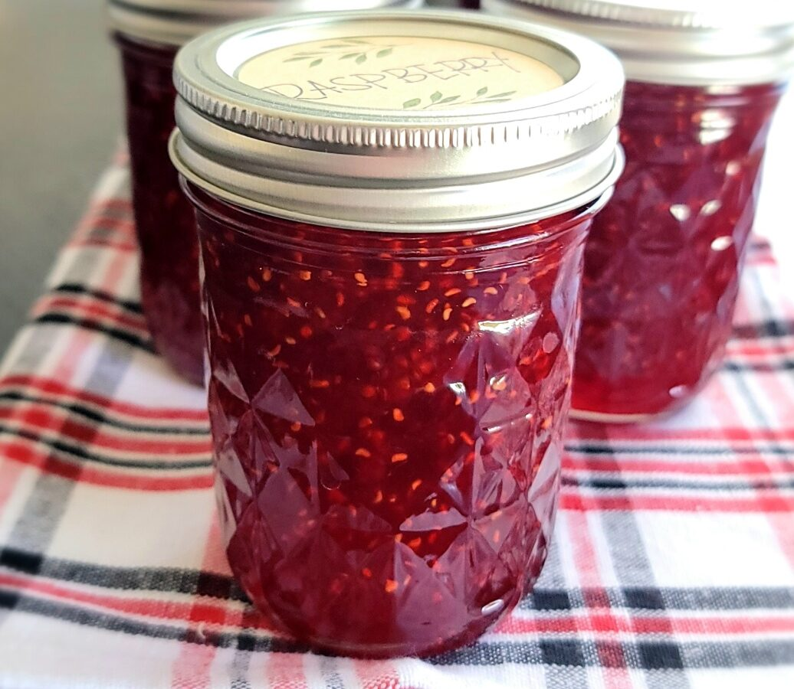

Abstract
Section 1
Watermelon
Mango
My current favorite fruit are raspberries. It is also one of the best flavors when the option exists for a specific food (e.g. ice cream, jelly, yogurt)
They are also good on their default form.

raspberry yogurt